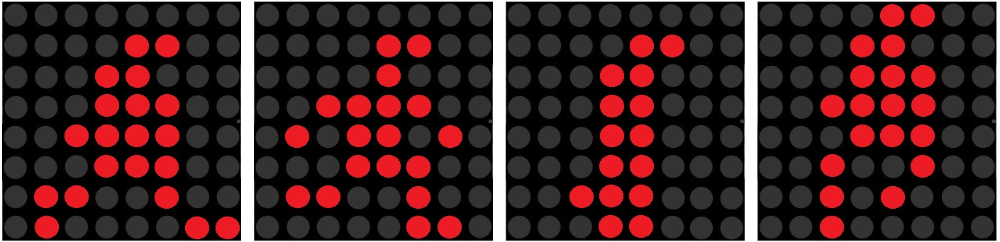

Your breadboard should still have the circuit we wired in the project. As a reminder, here is what it should look like:

In this project, we will create a sprite of a person (this is actually the same sprite used by Minecraft for their main character, Steve), and we will draw and animate that sprite on the LED Matrix.
Your breadboard should still have the circuit we wired in the project. As a reminder, here is what it should look like:
In this project, we will create a sprite, and we will animate that sprite. In order to animate the sprite, we will create multiple versions of the sprite, and we will display the different versions of the sprite on our LED Matrix, one at a time. If we rotate through the sprite images reasonably quickly, the sprites will appear as a continuous animation. In this case, the animation will be of a person running.
Here are the four sprites we will rotate through to create our animation:

If it's not completely obvious what the animation will look like based on those four sprite designs, just wait and see...
For our code, we will use the Game Loop format. First, we'll do all of our initialization and define our sprites, then in a loop, we will cycle through our sprites, erasing/drawing/displaying each sprite in the sequence.
Here is the code, which hopefully you'll find pretty straightforward at this point:
Give it a try. You should see your animated sprite displayed on your LED Matrix.
Can you add a button that, when pressed, makes the running man jump? That is, displays him shifted up one or two points above the bottom of the display.
Can you add a second button that, when pressed, makes the running man go faster?
Can you add a third button that, when pressed, makes the running man flash on and off while still running?
Can you add a fourth button that, when pressed, makes the running man change direction?
Challenging: Can you modify the first button so that it makes the running man jump gradually? That is, as he continues to run, slowly display him shifted up one point, then two points, then three points, then two points, then one point, then back to ground?